Kris's Wiki
Sobre
Kris Dreemurr é um Lightner humano e protagonista principal de Deltarune.
De acordo com a Profecia, atua como o suposto Herói da Luz.
Em um Mundo Sombrio, atua como líder do grupo.
O jogador controla Kris durante a maior parte do jogo.
As poucas exceções são em cutscenes ou quando arranca a SOUL do próprio corpo.
Nas batalhas, Kris se destaca em ACTing e empunha uma espada.

Design no Overworld
Design no Darkworld
Personalidade
- Costumava pregar peças
- É de personalidade introvertida
- Gosta de tocar piano
- Tem o hábito de não acordar cedo
Status
Nível
Vida
Ataque
Defesa
Magia
Coragem
1
90
10
2
0
1
2
120
12
2
0
2
3
160
14-15
2
0
2
4
200
17
2
0
3
História
Anos atrás, a família Dreemurr adotou Kris, que cresceu em um lar cheio de afeto.
Porém, sendo a única criança humana em Hometown, Kris muitas vezes se sentia como alguém de fora.
Certa vez, Kris perguntou aos pais adotivos quando “seus chifres iriam nascer”.
Em resposta, Toriel e Asgore compraram uma tiara com chifres vermelhos para Kris, que usou o acessório por meses.
Durante a infância, Kris criou um vínculo muito forte com o irmão mais velho, Asriel.
Os dois exploravam frequentemente as florestas ao redor da cidade junto de seus vizinhos, Dess e Noelle Holiday.
Quando Kris ia até a casa da família Holiday, costumava brincar ou pregar peças em Noelle, além de tocar piano — embora parasse sempre que Noelle observava.
O grupo de quatro era bastante unido, mas com o tempo Kris e Noelle se afastaram. A causa não é clara, mas há indícios de que esteja ligada ao desaparecimento de Dess.
Kris também tinha o desejo de fazer amizade com Bratty, considerada uma das “crianças mais velhas”. Para agradá-la, ajudava trazendo comida, até que Bratty adoeceu.
Em determinado momento, Toriel e Asgore se divorciaram.
É sugerido, no Capítulo 3, que antes da separação Kris presenciou diversas discussões entre os pais, o que causou sofrimento.
Também há fortes indícios, nos segmentos do Ovo, de que Kris passou por algum tipo de trauma reprimido, já que interações com o Homem apontam para algo visto atrás de uma árvore que Kris não consegue encarar ou expressar completamente.
Mesmo com a família fragmentada, Kris e Asriel permaneceram inseparáveis. De vez em quando, Asriel comprava chocolate quente para Kris no QC’s Diner, um costume que antes envolvia toda a família.
Um dia, porém, Asriel precisou partir para a faculdade, deixando Kris sozinho e com poucos amigos.
Galeria de Sprites
 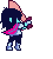
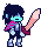
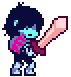
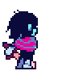
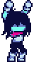
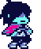
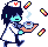
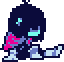
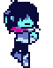
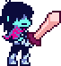
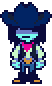
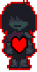
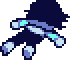
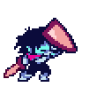
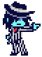
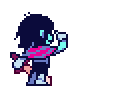
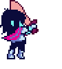
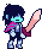
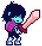
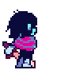
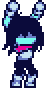
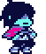
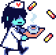
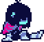
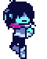
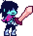
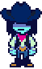
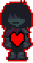
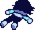
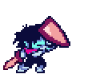
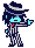
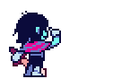
 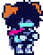
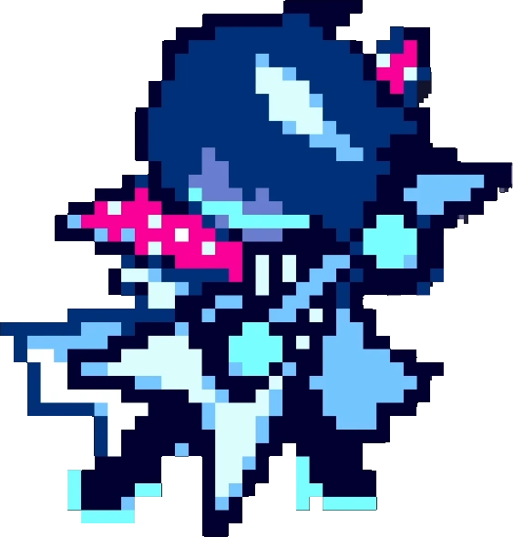
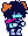
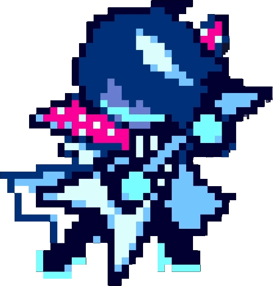